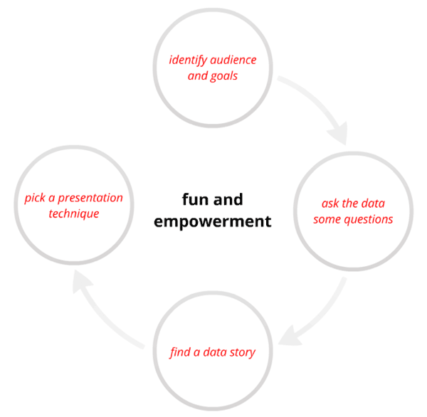

(* Immagine)
ARIADNE è un acronimo per “Advanced Research Infrastructure for Archaeological Dataset Networking in Europe”: il progetto è stato finanziato nell’ambito del VII Programma Quadro della Commissione Europea per la ricerca e lo sviluppo tecnologico (qui la scheda progetto sul sito della Commissione Europea)
L’obiettivo del progetto, della durata di quattro anni e finanziato con circa 8 milioni e mezzo di euro, è questo:
“bring together and integrate the existing archaeological research data infrastructures.”
La creazione di un’infrastruttura europea di dati archeologici per la ricerca web-based realizzerà l’interoperabilità fra le numerose banche dati già disponibili, contenenti i risultati delle ricerche individuali, di equipe e di varie istituzioni europee e componenti perciò “a vast and fragmented corpus“ le cui potenzialità risultano diminuite dalle difficoltà di accesso e della assenza di omogeneità (forse è importante esplicitare che ARIADNE integrerà le funzionalità ed i servizi delle infrastrutture digitali di dati archeologici già esistenti ai fini della interoperabilità fra esse, esattamente come Europeana nei confronti dei vari provider di contenuti digitali, tra cui CulturaItalia).

{kind=link}